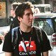

January 25th – 27th, 2013
Relax in Berlin
Proudly supporting Apache CouchDB
A CouchDB Conference & CouchHack.
CouchDB Conf is a one-day conference and a two-day Barcamp/Hackathon for the CouchDB community by the CouchDB community.
co.up coworking space
Berlin, Germany
Friday – Sunday, January 25th – 27th, 2013
50 tickets, 50€ Sold out, sign up for the waiting list here.

A full day of regular conferencing with presentations from and for developers and users.
09:30 - Opening & Registration
10:00 – 10:15 Welcome
10:15 – 10:45 The State of CouchDB — Jan Lehnardt
10:45 – 11:15 CouchDB at Nodejitsu — Nuno Job
11:15 – 11:30 Break
11:30 – 12:00 GeoCouch — Volker Mische
12:00 – 12:30 BigCouch — Robert Newson & Till Klampäckel
12:30 – 14:00 Lunch
14:00 – 14:30 PouchDB, Realising the Replication Dream — Dale Harvey
14:30 – 15:00 Peer-to-peer PouchDB with Chrome — Randall Leeds
15:00 – 15:15 Break
15:15 – 15:45 Building Mobile Apps with TouchDB — Katrin Apel
15:45 – 16:15 Cross Platform Application Development with CouchDB & Wallaby — Stephan Strohmeier
16:15 – 16:30 Break
16:30 – 17:00 Application of CouchDB in Combustion Modeling — Martin Hilbig
17:00 – 17:30 Hypermedia Interfaces with CouchDB — David Zuelke
17:30 – 18:00 Closing Notes
18:00+ Drinks, Hacking, Dinner, Drinks
Drinks & food are on you. We’ll have plenty of recommendations on where to go for lunch. Drinks will be available at the venue.
A BarCamp-style unconference with talks and hack-sessions by the participants, focusing on:
Introducing CouchDB by example — Oliver Kurowski
Hacking CouchDB internals — Dave Cottlehuber
Both workshops are 30-60 minute introdcutions to their respective topics.
The same as Saturday, but with breakout time for CouchDB core developers to discuss internals and roadmap, done in a panel so that aspiring contributors & users can peek in and learn.
The Call for Speakers is closed. Thanks for your participation! :)
The Google Map has a selection of places for both lunch and and dinner. There is a great variety of affordable and decent food in walking distance.
We are meeting at the lovely coworking space, co.up. They have enough seating for everybody, breakout rooms for hacking, great coffee, fast internet, and plenty of tasty food nearby.